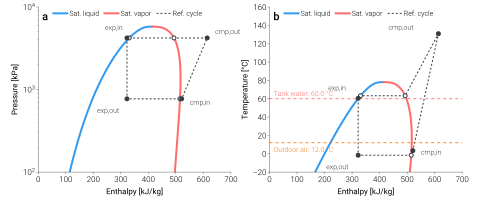
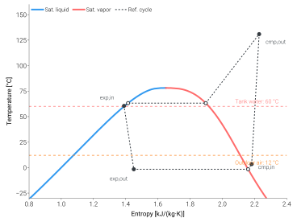

Visualize thermodynamic cycle¶
Because TMHP solves the cycle from first principles, every
analyze_steady call returns the full thermodynamic state at each
cycle node (compressor in / out, expander in / out, evaporator /
condenser saturation). Plotting those points on a
pressure–enthalpy (P–h) chart — and, side by side, on a
temperature–enthalpy (T–h) chart — is the fastest way to
sanity-check a solved cycle.
This tutorial draws both panels with no extra dependencies — just
CoolProp and Matplotlib, both already pulled in by uv sync.
The output¶
{kind=link}

R32 cycle at a realistic DHW operating point — \(T_{\mathrm{tank}}=60\,^{\circ}\mathrm{C}\), \(T_{0}=12\,^{\circ}\mathrm{C}\), \(\dot{Q}_{\mathrm{cond}}=8\,\mathrm{kW}\). Filled circles are the four cycle states (cmp,in / cmp,out / exp,in / exp,out); open circles are the saturation-envelope crossings. Panel (b) overlays the tank-water and outdoor-air temperatures as the heat-sink and heat-source references.¶
The T-s companion view¶
{kind=link}

Same cycle, plotted on a T-s plane. Compression (1→2) is a near-vertical climb (the cycle is close to isentropic), while isenthalpic expansion (3→4) generates entropy and sits visibly to the right of point 3 on the saturation dome.¶
How to read it¶
Saturation envelope — blue is saturated liquid, red is saturated vapour. The dome interior is two-phase; outside is single-phase liquid (left) or vapour (right).
Cycle traversal — follow the four labelled states in order:
exp,out → cmp,in— evaporation at the source side. Horizontal segment on the P–h panel at the evaporating pressure; the T–h panel shows it tracking just above the outdoor-air reference line.cmp,in → cmp,out— compression. Pressure climbs sharply; enthalpy increases by the specific work of the compressor.cmp,out → exp,in— de-superheat + condensation at the condenser pressure. Enthalpy drops as the refrigerant gives up its latent heat to the water side; the T–h panel shows it settling just above the tank-water reference line.exp,in → exp,out— isenthalpic expansion. Vertical segment on the P–h panel (h preserved, pressure drops); the T–h panel shows the corresponding temperature drop down to the evaporating temperature.
The script¶
The complete script lives at
scripts/visualization/mollier_cycle_R32.py.
The core is a saturation-envelope sweep via CoolProp for each panel
plus a dashed connector through the seven cycle points returned by
analyze_steady:
import CoolProp.CoolProp as CP
import matplotlib.pyplot as plt
import numpy as np
from tmhp import AirSourceHeatPumpBoiler
REF = "R32"
ashpb = AirSourceHeatPumpBoiler(ref=REF)
r = ashpb.analyze_steady(T_tank_w=60.0, T0=12.0, Q_ref_tank=8_000.0)
# Saturation envelope for the P-h panel (kJ/kg, kPa).
T_crit = CP.PropsSI("Tcrit", REF)
T_grid = np.linspace(220.0, T_crit - 0.5, 200)
h_liq = np.array([CP.PropsSI("H", "T", T, "Q", 0, REF) for T in T_grid]) / 1_000
h_vap = np.array([CP.PropsSI("H", "T", T, "Q", 1, REF) for T in T_grid]) / 1_000
p_sat = np.array([CP.PropsSI("P", "T", T, "Q", 0, REF) for T in T_grid]) / 1_000
def hp(h_key, p_key):
return r[h_key] / 1_000, r[p_key] / 1_000
pts = {
"1*": hp("h_ref_evap_sat [J/kg]", "P_ref_evap_sat [Pa]"),
"1": hp("h_ref_cmp_in [J/kg]", "P_ref_cmp_in [Pa]"),
"2": hp("h_ref_cmp_out [J/kg]", "P_ref_cmp_out [Pa]"),
"2*": hp("h_ref_cond_sat_v [J/kg]", "P_ref_cond_sat_v [Pa]"),
"3*": hp("h_ref_cond_sat_l [J/kg]", "P_ref_cond_sat_l [Pa]"),
"3": hp("h_ref_exp_in [J/kg]", "P_ref_exp_in [Pa]"),
"4": hp("h_ref_exp_out [J/kg]", "P_ref_exp_out [Pa]"),
}
fig, ax = plt.subplots(figsize=(7.2, 5.0))
ax.plot(h_liq, p_sat, label="Sat. liquid")
ax.plot(h_vap, p_sat, label="Sat. vapor")
path = ["1*", "1", "2", "2*", "3*", "3", "4", "1*"]
xs = [pts[p][0] for p in path]
ys = [pts[p][1] for p in path]
ax.plot(xs, ys, marker="o", linestyle=":", label="Ref. cycle")
ax.set_yscale("log")
ax.set_xlabel("Enthalpy [kJ/kg]")
ax.set_ylabel("Pressure [kPa]")
ax.legend()
The full script in the repo extends this minimal core with the T–h panel, the operating-condition reference lines, and the open / filled marker convention used in the figure above.
To regenerate the figure shipped with the docs:
uv sync --locked
uv run python scripts/visualization/mollier_cycle_R32.py
The script pins mpl.rcParams["svg.hashsalt"] so the resulting SVG
is byte-identical across runs — the same convention used by
scripts/validation/samsung_ehs_parity.py.
Going further¶
Other refrigerants — change
REF(and re-runanalyze_steadywith the same operating point) to compare cycle shapes across R290, R410A, R134a, etc.Other diagrams — the library also ships a
mollier_diagrammodule with T–h, P–h, and T–s plotters in Visualization. These are styled with dartwork-mpl, a thin matplotlib utility layer that is pulled in automatically byuv sync.Multi-point overlays — pass several
analyze_steadyresults to the same figure to compare cycles at different outdoor temperatures or different LWT set-points.